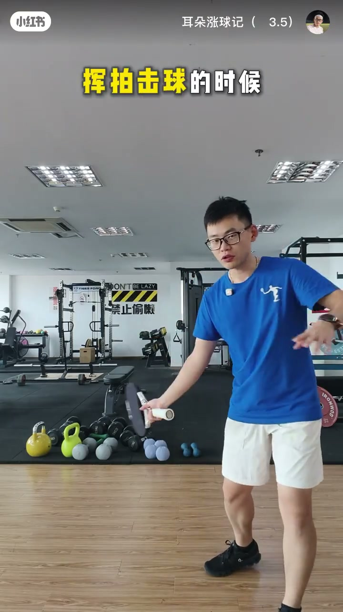
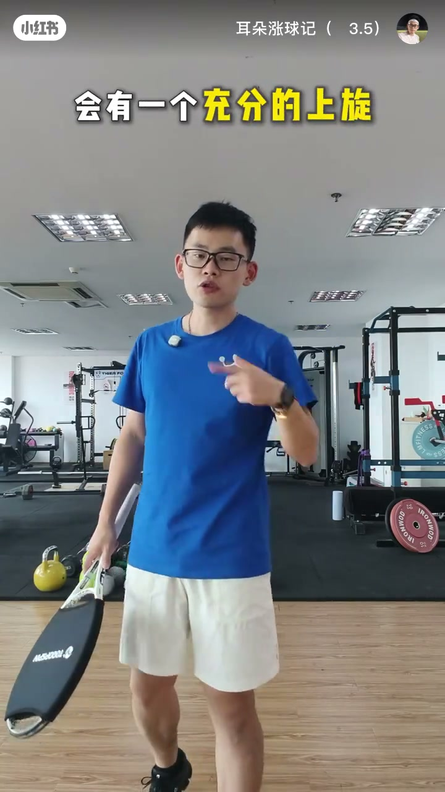
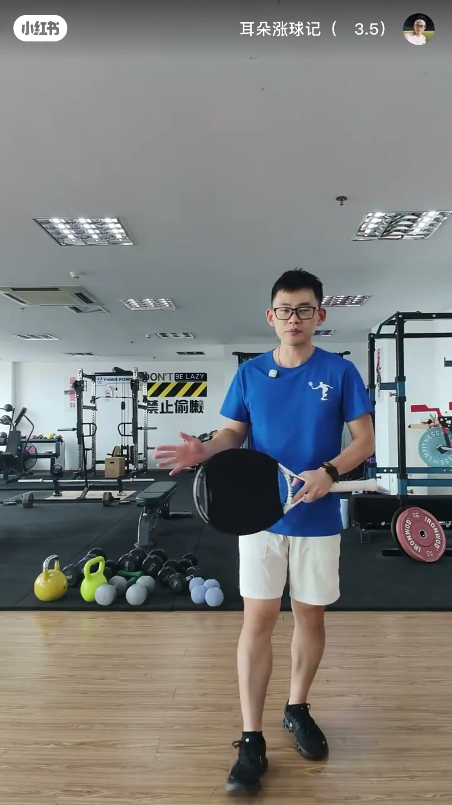
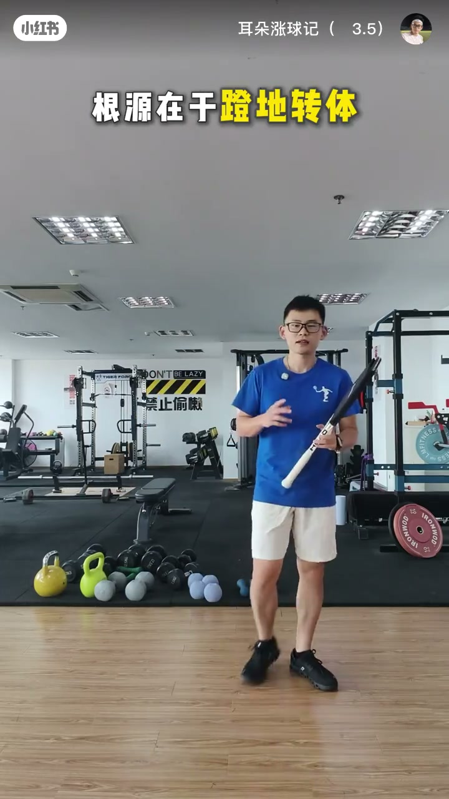

内容要点
知识结构
[00:00→00:09]
定义提前开拍
教练常说别提前打开拍面；要点是击球时序。
[00:09→00:18]
错误时序
球拍还在身后时拍面已朝侧/打开，转过来击球时已朝前。
[00:18→00:28]
为何出界
提前开拍最大问题是球路往上走，缺少包裹旋转。
总结
正手别提前翻开拍面；让拍面在击球过程中再打开，才能包球不上飞。
图文实录
什么叫提前开拍
00:00 – 00:09
口播先抛问题：大家是不是有提前开拍；教练常说拍面不要提前打开。
这就是价值的精髓大家是不是有提前开拍的问题
教练经常说拍面不要提前打开

[00:11]定义：什么叫拍面提前打开
Definition: what early racket-face opening means
错误画面：身后已打开
00:09 – 00:18
球拍还在身后时拍面已朝侧边打开，转过来击球时拍面朝前——时序错了。
球拍在我们后面的时候球拍已经是打开拍面朝侧边的状态

[00:33]错误：引拍阶段拍面过早打开
Error: face already open during the backswing
后果：球往上飞
00:18 – 00:88
提前开拍最大问题是球路往上走；笔记补充诱因：手臂抢先发力、引拍掉肘。纠正方向是按垫步-转体-引拍等框架，延迟打开拍面。
提前开拍的最大的问题就是我们的球路是往上走的

[00:55]纠正：击球过程中再打开拍面包球
Fix: open the face through contact to brush the ball

[01:17]随挥收拍：检查是否仍过早翻腕
Follow-through: check for early wrist flip